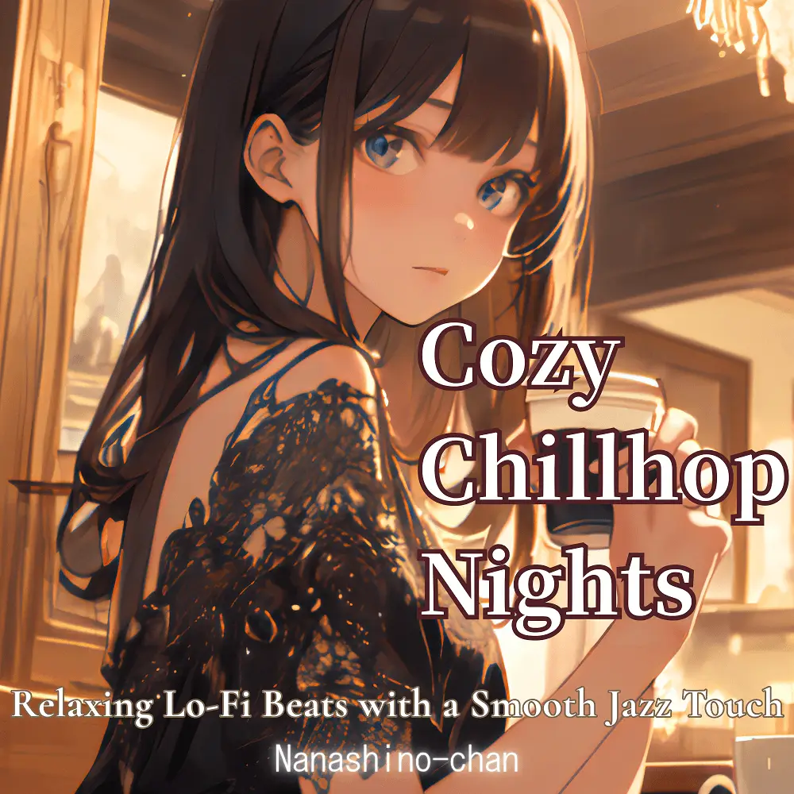

Chillhop · Lo-Fi · Jazzhop
Cozy Chillhop Nights:Relaxing Lo-Fi Beats with a Smooth Jazz Touch
Nanashino-chan
Explore Cozy Chillhop Nights:Relaxing Lo-Fi Beats with a Smooth Jazz Touch by Nanashino-chan: 19 instrumental tracks spanning Chillhop / Lo-Fi / Jazzhop. Start with Evening Mist / Gentle Breeze, preview the collection and find your favorites on streaming services.
2025-04-18 · Released · 19 tracks · Instrumental
Preview the album
The jacket stays here until you choose a track. Playback uses YouTube.
YOUTUBE PREVIEW
Choose a track to listen
The jacket stays here until you choose a track. Playback uses YouTube.
If playback is unavailable, open the album or track on the streaming service.
Find this album on streaming services
Links marked “search” open search results. Select the album or track on the service.
Track list 19
- 01Evening Mist
- 02Gentle Breeze
- 03Soft Sunshine
- 04Coffee Shop Vibes
- 05Serene Pathways
- 06Tranquil Moments
- 07Velvet Dreams
- 08Calm Reflections
- 09Gentle Jazz
- 10Cozy Corners
- 11Soft Silhouettes
- 12Mellow Evening
- 13Warm Embrace
- 14Twilight Tunes
- 15Soothing Serenade
- 16Lush Landscapes
- 17Midnight Melodies
- 18Peaceful Echoes
- 19Sunset Glow
Find a sound for your next post
Copy “Nanashino-chan + track title” and paste it into your social app’s music search. Availability depends on your region and account. Copying the name does not grant usage rights.